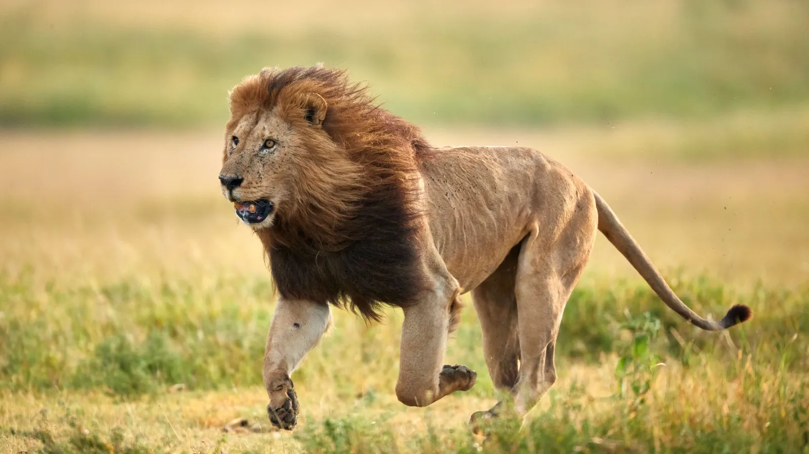
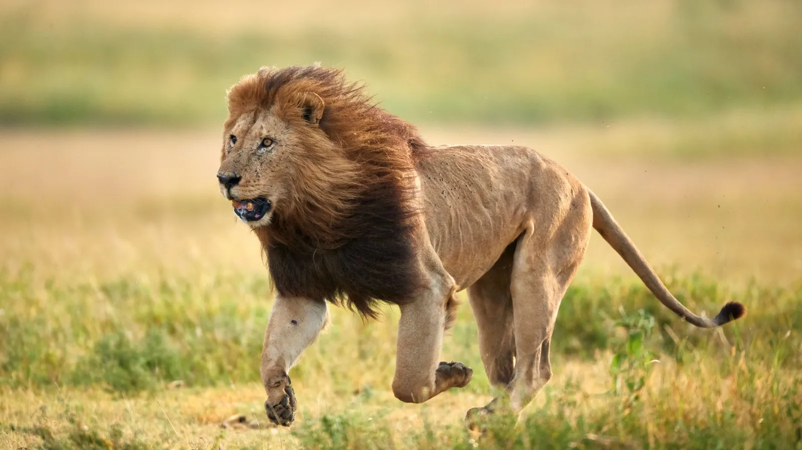
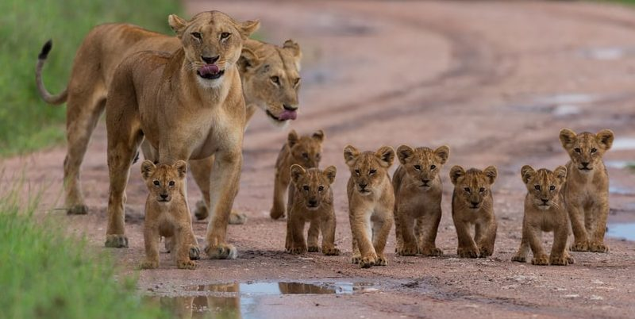
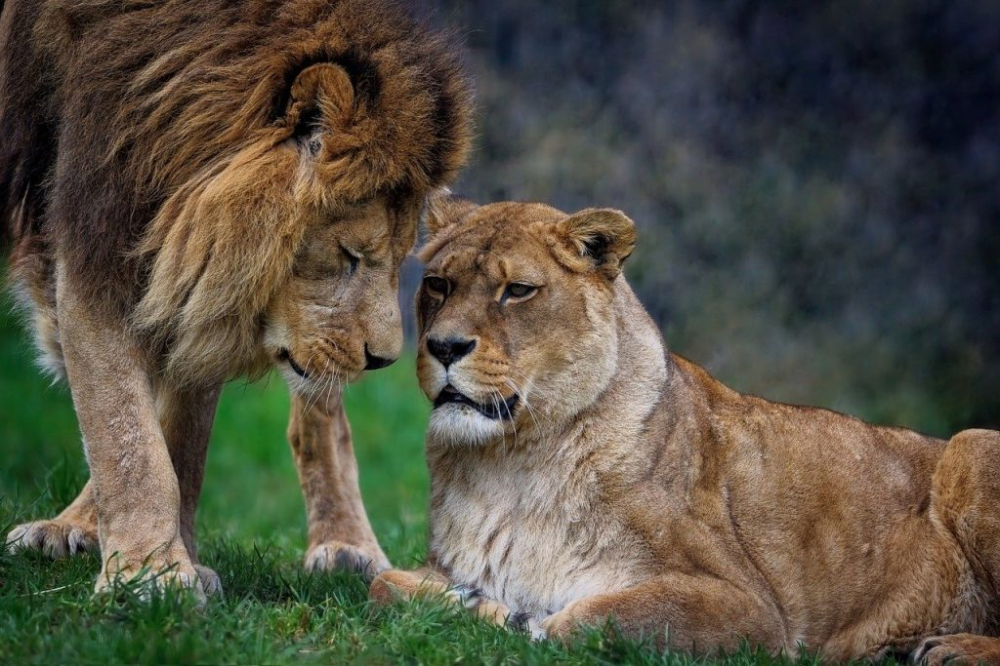
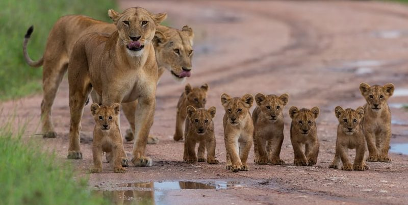
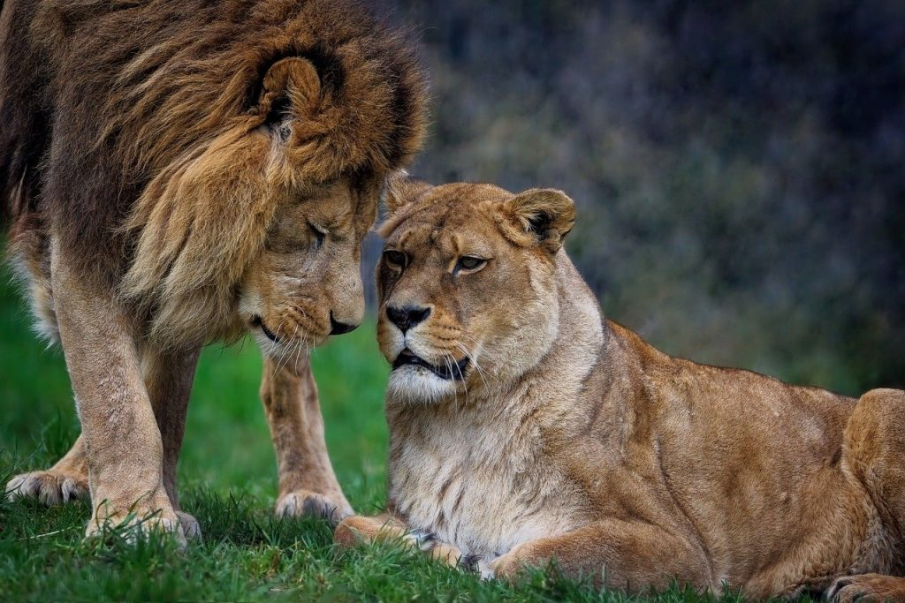

El rey de la selva...
Majestuoso, poderoso y emblemático, el león (Panthera leo) es mucho más que un gran felino: es un
símbolo de fuerza y liderazgo. Conocido como
"el rey de la selva", este depredador domina las llanuras africanas y ha sido venerado en culturas de todo el mundo por su valentía y magnificencia.
En nuestro documental, exploraremos su comportamiento, su papel crucial en el ecosistema y los desafíos que enfrenta en su lucha por la supervivencia.
Acompáñanos a descubrir la vida del león en su hábitat natural y a comprender por qué debemos
proteger a este ícono de la vida salvaje.
Alma Salvaje: Una Colección Visual
 

 


